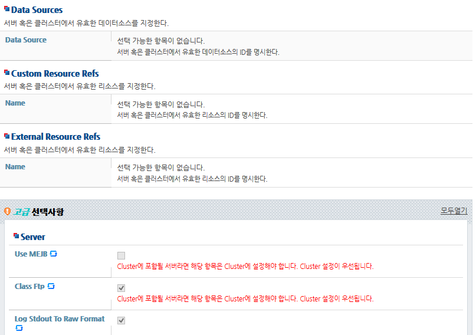

내용 목차
본 장에서는 도메인 설정변경의 과정과 WebAdmin 및 콘솔 툴(jeusadmin)을 사용한 설정변경 방법에 대해 설명한다.
도메인에 대한 설정은 각 도메인의 config 디렉터리(DOMAIN_HOME/config)에 존재한다. 설정 파일인 domain.xml에는 도메인에 속한 서버 및 클러스터에 대한 설정과 리소스 및 서비스에 대한 설정, deploy된 애플리케이션의 정보 등이 포함된다.
동적 설정 반영은 서버 운영 중에 설정을 변경하면 서버를 재부팅하지 않아도 실시간으로 반영이 되는 기능을 의미한다. 변경된 설정은 DAS가 검증하여 MS로 분배하기 때문에 사용자가 직접 XML을 편집하여 변경한 경우는 동적 반영이 되지 않고, WebAdmin과 jeusadmin을 사용하여 변경한 설정에 대해서만 동적 반영된다.
설정 변경을 위해 Lock을 얻은 상태에서는 MS의 start/stop과 같은 제어 명령을 수행할 수 없다.
DAS를 통한 동적 설정변경을 위해서는 리소스 이름 jeus.domain.<domain-name>, 리소스 액션 DynamicConfiguration 권한이 필요하다. 특히, 보안 설정변경의 경우 사용자는 자신의 동적 설정변경 권한을 삭제할 수 없다. 이는 사용자가 언제나 자신이 설정한 부분을 다시 원래대로 복구할 수 있도록 보장하기 위한 것이다.
JEUS 시스템에서 특정 사용자에 특정 리소스 권한을 부여하는 방법은 “JEUS Security 안내서”의 “2.6. 보안 시스템 정책 설정”을 참고한다.
서버를 운영하는 데 필요한 설정은 서버가 속한 도메인에 하나의 파일로 관리된다.
하나의 설정 파일은 DAS에서 관리 및 유지되고, 성능을 위해 서버가 존재하는 여러 머신에 분배되어 read-only 상태로 로컬 Cache에 존재한다. JEUS는 DAS를 통해 동적 설정 반영을 지원한다.
동적 설정변경의 과정은 다음과 같다.
여러 사용자가 동시에 설정을 변경할 수 없도록 lock을 수행한다. 사용자는 DAS로 Lock을 요청하고 DAS는 Lock을 요청한 사용자가 설정변경 권한을 가졌는지, 이미 다른 사용자가 설정을 변경 중인지를 판단하여 Lock을 넘겨준다.
DAS로부터 Lock을 얻은 사용자는 현재 운영 중인 설정을 변경할 수 있다.
변경한 설정 정보를 DAS로 전달하기 위해 save한다. Saved 상태는 클라이언트의 메모리에만 있던 변경 정보를 DAS의 메모리 정보로 옮겼다는 것과 일정 부분 변경 사항에 대한 검사가 통과되었다는 의미이고, 파일로 저장한 상태는 아니다. 따라서 activate 전에 save까지만 수행한 상태에서 DAS가 종료되면 save했던 변경 사항은 남지 않는다.
클라이언트, 즉 WebAdmin을 수행하는 브라우저를 종료해도 이미 save한 내용은 DAS에 저장되어 다시 WebAdmin에 접속하여 진행 중이던 설정변경을 계속 할 수 있다. 또한 같은 이름의 사용자가 동시에 변경을 진행하는 경우에는 서로의 변경 사항을 확인할 수 있다. 따라서 동시에 여러 브라우저에서 변경할 때에는 서로 변경 사항이 손실되지 않도록 적절한 타이밍에 save를 수행해야 한다.
변경한 사항을 서버에 반영하기 위해서 activate를 수행한다. 마지막 save한 변경 사항을 검사하여 각 서버에 반영하고, 파일로 저장한다. 작업을 완료한 후 Lock을 돌려주어 다른 사용자가 Lock을 가져갈 수 있도록 한다.
변경 사항은 반영하지 않으려면 cancel을 수행한다. 그러면 DAS에 저장되었던 변경 사항을 모두 삭제하고 Lock을 돌려준다.
설정 내용이 변경되면 서버에 적용해야 하는데 설정은 동적 반영이 가능한 설정과 서버의 재시작이 필요한 설정으로 구분된다.
동적 반영이 가능한 설정은 변경 후 서버의 재시작 없이 즉시 서버에 반영된다.
WebAdmin을 사용할 경우 동적 변경이 가능한 설정 항목에 아이콘이 표시되어 있다. 아이콘이 표시되지 않은 설정 항목은 서버를 재시작해야 반영되는 설정이다.
[LOCK & EDIT] 버튼을 클릭(lock 수행)한 후 아이콘이 표시된 항목을 설정 및 수정한다. 수정 후 [확인] 버튼을 클릭(save 수행)하고, 화면 왼쪽의 [Activate Changes] 버튼을 클릭(activate 수행)하면 변경 사항이 즉시 반영된다.
|  |
콘솔 툴(jeusadmin)에서 동적 변경이 가능한 항목은 명령어 파라미터 설명에 [Dynamic]이 표시되어 있다.
jeusadmin의 각 명령어에서 lock, save, activate가 자동으로 수행되므로 [Dynamic] 항목에 설정값을 입력하여 해당 명령어를 수행하면 변경 사항이 즉시 반영된다.
[DAS]domain1.adminServer>help modify-server ... OPTIONS [-removelogdir,--removeLogHomeDirectory] remove the log directory which has all the log files created by this server [-node,--nodeName <node-name>] name of the node this server is located <server-name> the name of server you want to modify configuration of [-jvm,--jvmOptions <jvm-options>] jvm configurations applied to this server jvm [-logdir,--logHomeDirectory <server-log-home-directory>] the log directory which has all the log files created by this server [-a,--actionOnResourceLeak <action-on-resource-leak>] strategy when resource leak is detected. it must be one of AutoClose, NoAction, Warning [-l,--logStdoutToRawFormat <print-stdout-to-raw-format>] [Dynamic] whether stdout is printed in row format or in JEUS Logger format. [-m,--mejb <enable-MEJB>] [Dynamic] whether using MEJB or not .true, false [-c,--classFtp <enable-class-ftp-service>] [Dynamic] whether using class ftp service or not .true, false [-f,--forceLock] Acquires the configuration lock forcibly. [-detail] show detail results
전체 설정에 대한 동적 변경 요소의 자세한 내용은 “JEUS Reference Book”의 “4.2. jeusadmin”을 참고한다.
서버의 재시작이 필요한 설정과 실시간 동적 변경 반영이 가능한 설정이 함께 변경된 경우는 activate 명령을 수행하면 후자만 실시간으로 반영된다. 서버의 재시작이 필요한 설정들은 반드시 해당 서버가 재시작되어야 반영된다. 본 절에서는 WebAdmin과 콘솔 툴에서 변경된 설정 중 반영되지 않은 설정 정보를 확인하는 방법에 대해서 설명한다.
WebAdmin 왼쪽 메뉴에서 [Servers]를 선택하면 Servers 화면에서 서버 목록 및 상태 정보가 조회된다. 컬럼 중에 'Need To Restart'가 'true'로 출력된 서버는 설정 내용의 반영을 위해 재시작이 필요하다.
콘솔 툴(jeusadmin)에서 server-info 명령을 수행하면 다음과 같이 서버 목록 및 상태 정보가 조회된다. 각 서버의 정보에서 'Need to Restart' 항목이 'true'로 출력되는 경우에는 해당 서버의 재시작이 필요하다.
[DAS]domain1.adminServer>server-info Information about Domain (domain1) =============================================================================================== +--------+---------+-----+-------+-----+----------------+---------+-------------+-------------+ | Server | Status | Node| PID | Clus| Latest Start | Need to | Listen Ports| Running | | | |Name | | ter |Time / Shutdown | Restart | | Engines | | | | | | | Time | | | | +--------+---------+-----+-------+-----+----------------+---------+-------------+-------------+ | adminSe| RUNNING | N/A | 5360 | N/A | 2016-08-23 | false | base-192.168| jms, | |rver(*) |(00:25:52| | | |(화) 오후 | |.34.3:9736 | ejb, web | | |) | | | |03:53:28 KST | | http-server-| | | | | | | | | |0.0.0.0:8088 | | | | | | | | | |jms-internal-| | | | | | | | | |0.0.0.0:9741 | | +--------+---------+-----+-------+-----+----------------+---------+-------------+-------------+ | server1| RUNNING |node1| 6424 | N/A | 2016-08-23 | true | base-192.168| jms, | | |(00:16:15| | | |(화) 오후 | |.34.1:9836 | ejb, web | | |) | | | |04:03:05 KST | | | | +--------+---------+-----+-------+-----+----------------+---------+-------------+-------------+ | server2| RUNNING |node2| 3012 | N/A | 2016-08-23 | true | base-192.168| jms, | | |(00:16:15| | | |(화) 오후 | |.34.2:9936 | ejb, web | | |) | | | |04:03:05 KST | | | | +--------+---------+-----+-------+-----+----------------+---------+-------------+-------------+ ===============================================================================================
설정을 변경하면 기존 설정이 백업되는데 이것을 설정 로테이션이라고 한다.
현재 운영 중인 설정은 항상 다음의 경로에 있는 파일들이다.
DOMAIN_HOME/config/domain.xml DOMAIN_HOME/config/security/SECURITY_DOMAIN_NAME/policies.xml DOMAIN_HOME/config/security/SECURITY_DOMAIN_NAME/accounts.xml
동적 변경이 됐을 경우 또는 서버의 재시작이 필요한 경우 모두 포함하여 domain.xml에 대한 변경 사항이 있으면 이전 domain.xml에 대한 백업 파일이 DOMAIN_HOME/config/.history 폴더 안에 domain_yyyymmdd_hhmmss.xml의 형식으로 저장된다. jeus.server.configfile.backup.size 프로퍼티를 통해 백업 파일 개수를 지정할 수 있다. (기본값: 50)
다음은 WebAdmin에서 백업 domain.xml을 확인하는 방법이다.
WebAdmin 화면의 왼쪽 메뉴에서 [Domain]을 선택한다.
우측 상단의 버튼을 클릭하면 다음과 같은 백업 도메인 설정 리스트를 확인할 수 있다.
추가적으로 원하는 'fileName' 항목의 XML을 클릭하면 내부 내용도 확인이 가능하다.
WebAdmin 왼쪽의 [LOCK & EDIT] 버튼을 클릭하면 위 그림의 Command 아래에 [rollback] 버튼이 활성화된다. 원하는 백업 설정으로 rollback이 가능하며 동적 반영이 가능한 설정은 해당 백업 설정으로 실제 시스템에 반영이 된다.
다음은 WebAdmin을 사용하여 도메인의 설정을 변경하는 과정에 대한 설명이다.
WebAdmin 화면의 왼쪽 메뉴에서 [Domain]을 선택한다.
[LOCK & EDIT] 버튼을 클릭해서 설정변경 모드로 전환한다. WebAdmin의 LOCK 설정변경 모드에 대한 자세한 설명은 “JEUS WebAdmin 안내서”의 “2.3.2. 메뉴 영역”을 참고한다.
Domain 화면에서 각 항목 중 변경할 항목을 설정한 후 [확인] 버튼을 클릭한다.
다음은 설정 항목에 대한 설명이다.
| 항목 | 설명 |
|---|---|
| Admin Server Name | DAS의 ID에 해당하는 값으로 도메인 구성한 후에는 변경할 수 없다. |
| Id | 도메인의 ID에 해당하는 값으로 도메인 구성한 후에는 변경할 수 없다. |
| Domain Log Home | 도메인 내의 서버들이 공통으로 사용할 log의 폴더명으로 도메인 구성한 후에는 변경할 수 없다. |
| Production Mode | 실제 운영환경에 적합한 모드로, 웹 애플리케이션의 auto-reload나 hot-swap과 같은 기능은 제공하지 않는다 |
| Enable Webadmin | WebAdmin의 사용 여부를 선택하는 항목으로 기본적으로 체크되어 있다. 선택적으로 비활성화할 수 있고 필요한 경우 다시 체크하여 활성화할 수 있다. |
| Enable Json Command | Json Command 사용 여부를 선택하는 항목으로 기본적으로 꺼져있다. 선택적으로 비활성화할 수 있고 필요한 경우 다시 체크하여 활성화할 수 있다. |
| Enable To Resynchronize Applications | MS가 INDEPENDENT 모드에서 DEPENDENT 모드로 변경된 경우 MS에서 DAS와 애플리케이션을 동기화할 것인지에 대한 설정이다. (기본값: false, 동기화하지 않음) |
| Application Repositories | 서비스할 애플리케이션의 위치를 설정하는 항목으로 동적으로 추가 및 삭제할 수 있다. 이에 대한 자세한 설명은 “JEUS Applications & Deployment 안내서”의 “1.5.1. 애플리케이션 저장소 추가/삭제/조회”를 참고한다. |
| System Clustering Framework | 서버들 간의 내부 통신 및 상태 확인에 사용되는 네트워크 설정으로써 도메인 전체에 걸쳐서 적용되므로 변경할 경우에는 도메인 전체를 다시 시작해야 한다. JEUS에서는 서버 간에 서로의 상태를 공유하기 위해 기본적으로 Multicast를 사용한다. 자세한 내용은 “2.1. 도메인 생성”을 참고한다.
아래의 항목들은 대부분의 경우에 특별히 설정할 필요는 없으나, 도메인의 규모에 따라서 적절한 값으로 조절해야 한다.
|
| Domain Backup | DAS가 기동할 때 백업 파일을 만들지에 대한 설정이다. 백업 파일의 생성 여부와 디렉터리를 설정할 수 있다. 기본적으로 도메인 백업을 생성하지 않도록 설정은 꺼져있다. 해당 기능에 대한 자세한 설명은 “6.1.2. 도메인 백업을 이용한 장애 극복”을 참고한다. |
'Enable Webadmin', 'Enable Json Command', 'Enable To Resynchronize Application', 'Application Repositories', 'Domain Backup'을 제외한 도메인 설정 항목은 동적 변경이 불가능하기 때문에 설정을 반영하기 위해서는 도메인 전체를 재시작해야 한다. 도메인 설정은 개별 서버의 설정과는 달리 도메인 구성에 관한 설정이다. 따라서 도메인을 구성할 때 'Admin Server Name', 'Id', 'Domain Log Home' , 'Production Mode', 'System Clustering Framework' 영역의 항목들은 신중하게 설정해야 한다.
변경 내용을 반영하기 위해 [Activate Changes] 버튼을 클릭한다. 변경 사항을 반영하지 않고 취소하려면 [Undo ALL Changes] 버튼을 클릭한다.
설정 반영이 성공적으로 완료되면 결과 메시지가 출력된다.
본 절에서는 WebAdmin과 콘솔 툴(jeusadmin)을 사용하여 System Thread Pool의 개수와 서버의 JVM 설정을 변경하는 방법에 대해 설명한다.
본 절에서는 WebAdmin과 콘솔 툴(jeusadmin)을 사용하여 System Thread Pool 개수를 변경하는 방법에 대해 설명한다.
WebAdmin을 사용하여 System Thread Pool의 개수를 변경하는 방법은 다음과 같다.
WebAdmin의 왼쪽 메뉴에서 [Servers]를 선택하면 서버 목록 조회 화면으로 이동한다. 조회된 서버 목록에서 서버를 선택한다
[LOCK & EDIT] 버튼을 클릭해서 설정변경 모드로 전환한다. WebAdmin의 LOCK 설정변경 모드에 대한 자세한 설명은 “JEUS WebAdmin 안내서”의 “2.3.2. 메뉴 영역”을 참고한다.
[Basic] > [System Thread Pool] 메뉴로 이동한다. System Thread Pool 화면에서 'Max' 항목을 '120'으로 수정한 후 [확인] 버튼을 클릭한다.
변경 내용을 반영하기 위해 [Active Changes] 버튼을 클릭한다. 변경 사항을 반영하지 않고 취소하려면 [Undo ALL Changes] 버튼을 클릭한다.
설정 반영이 성공적으로 완료되면 결과 메시지가 출력되고 System Thread Pool의 'Max' 항목이 '120'으로 변경된 것을 확인할 수 있다.
콘솔 툴(jeusadmin)으로 대부분의 설정을 변경할 수 있다. WebAdmin과는 달리 명시적으로 Lock을 설정할 필요가 없고 변경하려는 설정에 적절한 명령어를 찾아 실행하면 된다. 그러나 jeusadmin은 한 번에 변경할 수 있는 설정이 하나의 명령어 범위를 벗어날 수 없고, WebAdmin은 도메인 전체의 설정을 한 번에 수정할 수 있다.
다음과 같이 jeusadmin의 modify-system-thread-pool 명령을 실행하면 WebAdmin에서의 설정변경과 동일한 결과가 나타난다. modify-system-thread-pool 명령에 대한 자세한 내용은 “JEUS Reference Book”의 “4.2.5.3. modify-system-thread-pool”을 참고한다.
[DAS]domain1.adminServer>modify-system-thread-pool server1 -max 120
Successfully performed the MODIFY operation for The system thread pool of the server (server1)..
Check the results using "modify-system-thread-pool server1 or show-system-thread -pool server1"
본 절에서는 WebAdmin과 콘솔 툴(jeusadmin)을 사용하여 서버의 JVM 설정을 변경하는 방법에 대해 설명한다.
WebAdmin을 사용하여 서버의 JVM 설정을 변경하는 방법은 다음과 같다.
WebAdmin 왼쪽 메뉴에서 [Servers]를 선택하면 서버 목록 조회 화면으로 이동한다. 조회된 서버 목록에서 서버를 선택하고 [Basic] > [Basic Info] 메뉴로 이동한다.
[LOCK & EDIT] 버튼을 클릭해서 설정변경 모드로 전환한다. WebAdmin의 설정변경 모드에 대한 자세한 설명은 “JEUS WebAdmin 안내서”의 “2.3.2. 메뉴 영역”을 참고한다.
Jvm Config 영역의 'Jvm Option'을 변경하고 [확인] 버튼을 클릭한다.
설정변경을 반영하기 위해 [Activate Changes] 버튼을 클릭한다.
반영이 완료되면 결과 메시지가 출력되고 'Jvm Option'의 설정이 변경된 것을 확인할 수 있다.
콘솔 툴(jeusadmin)을 사용하여 서버의 JVM 설정을 추가하려면 다음과 같이 add-jvm-option 명령을 실행한다. add-jvm-option 명령은 사용자가 입력한 옵션을 jvm-option list와 비교하여 같은 것이 없으면 추가한다.
[DAS]domain1.adminServer>add-jvm-option -server server1 -opt "-Xmx256m -XX:MaxPermSize=128m"
Successfully performed the ADD operation for JVM configuration for the
server(sever1)., but all changes were non-dynamic. They will be applied after restarting.
Check the results using "list-jvm-options or add-jvm-option"
콘솔 툴(jeusadmin)을 사용하여 서버의 JVM 설정을 변경하려면 다음과 같이 modify-jvm-option 명령을 실행한다. modify-jvm-option 명령은 사용자가 입력한 옵션을 jvm-option list와 비교하여 같은 것을 수정한다.
[DAS]domain1.adminServer>modify-jvm-option -server server1 -old "-Xmx256m -XX:MaxPermSize=128m" -new "-Xmx512m -XX:MaxPermSize=128m"
Successfully performed the MODIFY operation for JVM configuration for the
server(server1)., but all changes were non-dynamic. They will be applied after restarting.
Check the results using "list-jvm-options or modify-jvm-option"
콘솔 툴(jeusadmin)을 사용하여 서버의 JVM 설정을 삭제하려면 다음과 같이 remove-jvm-option 명령을 실행한다. remove-jvm-option 명령은 사용자가 입력한 option을 jvm-option list와 비교하여 같은 것을 삭제한다.
[DAS]domain1.adminServer>remove-jvm-option -server server1 -opt "-Xmx256m -XX:MaxPermSize=128m"
Successfully performed the REMOVE operation for JVM configuration for the
server(server1)., but all changes were non-dynamic. They will be applied after restarting.
Check the results using "list-jvm-options or remove-jvm-option"
JVM 설정을 추가하는 경우에는 한번에 하나의 옵션을 추가해서 jvm-option 항목 하나에 하나의 옵션만 추가할 수 있도록 하고, 변경 및 삭제할 경우에는 list-jvm-option 명령을 통해 설정된 옵션을 주어 수정하는 것을 권장한다.